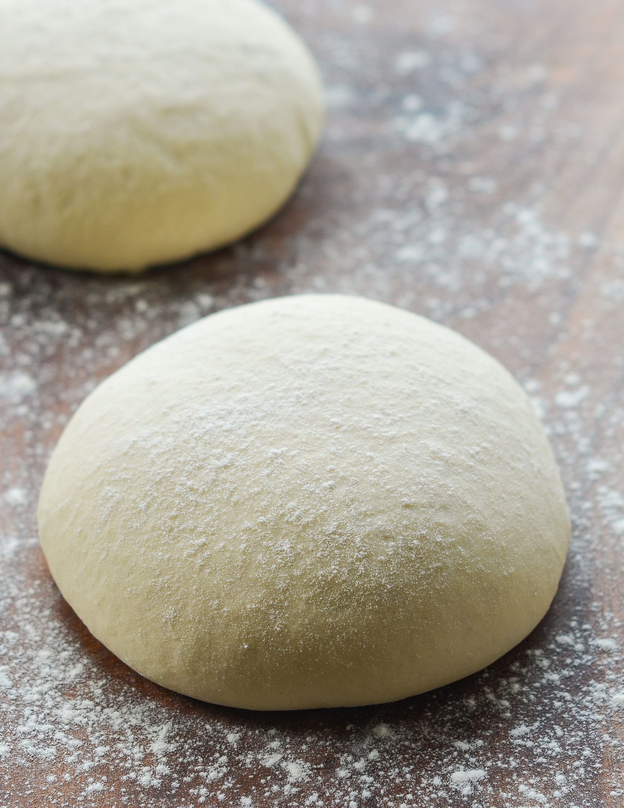

Pizza Dough

Description
Make tasty and authentic pizza dough with yeast easily with this recipe.
Estimated time: 1 ½ - 2 hours, where the fermentation process is ½ - 1 hours.
Ingredients
- 25 g yeast
- 2.5 dl water
- 2 tablespoons oil
- 0.5 teaspoons salt
- 7-8 dl flour
Steps
- Crumble the yeast into a bowl.
- Heat the water to 37 degrees Celsius and pour some of the water over the yeast and stir until the yeast is completely dissolved in the water.
- Add the rest of the water, oil and salt and stir.
- Add the wheat flour a little at a time - feel free to use a stand mixer or electric mixer with dough hooks and run until it becomes a nice dough. Take enough flour to make the dough good and release the rim of the bowl.
- Let rise under a cloth for ½ - 1 hour until the dough has doubled in size.
- Put the dough on a floured surface and knead it until smooth.
- Roll out the dough into the shape you want and place on a baking sheet with parchment paper or in pizza pans.